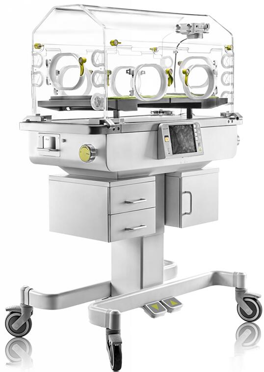
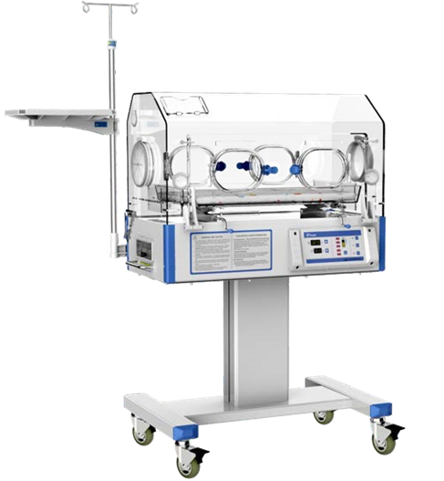
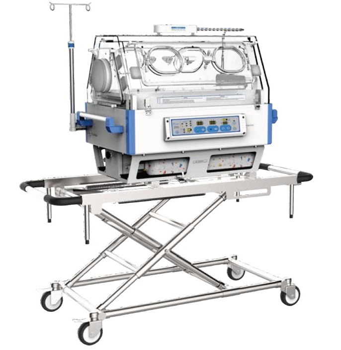

Ing. Jorge Martínez
Equipos médicos y de lavandería industrial a menor precio y con garantía!
Tag
Quienes Somos
Productos
Servicios
Ventajas
Contacto
Incubador Infantil
Home
Atrás
Incubador Infantil
AI-3

Incubador Infantil
AI-1A

Incubador de Transporte
AIT-1000

X
Incubador Infantil AI-3
Pantalla LCD de 8.4 "
Monitoreo de temperatura
Control de temperatura servo
Monitoreo de humedad
Servocontrol de humedad
Dos modos de control para la temperatura del aire y la temperatura corporal
Inclinación del colchón ± 12 °
Mango de diseño ergonómico con altura perfecta
Tendencia de 2, 4, 8, 12, 24 horas y hasta 7 días
Doble pared delantera y trasera y cortina de aire
Cajones grandes (28.0cm x 24.7cm x 36.0cm)
Cajones pequeños (28.0cm x 11.3cm x 36.0cm) * 2
Salida de potencia auxiliar * 3
Batería de respaldo para mantener el flujo de aire y la alarma después de un corte de energía durante más de 30 minutos
X
Incubador Infantil AI-1A
Sistema de temperatura servocontrolado basado en microprocesador
Modo de control: por aire
La humedad es ajustable en dos grados
La temperatura establecida, la temperatura del aire, la potencia de calentamiento se muestran por separado mediante LED
Función de autocomprobación, varias alarmas de falla audibles y visuales
función de ajuste de temperatura >37° C
Triple protección contra sobretemperatura con dispositivo de corte separado, mayor sistema de seguridad
La inclinación de la cama infantil es ajustable
Campana de pared simple, 4 ventanas operativas y 2 puertos de iris
Conector RS232 - Bracket con soporte
X
Incubador de Transporte AIT-1000
Modo pneumático y modo bebé controlados por microordenador
Uso alternativo de CA y CC, tensión en la ambulancia de 12VDC o 24VDC
La temperatura de ajuste, la temperatura del aire, la temperatura del bebé y el voltaje de la batería interna se pueden mostrar por separado
Doble capucha de pared con puerta lateral para poder sacar la cuna
Humedad natural del flujo de aire
La altura de toda la unidad puede ser ajustada
Cilindro de oxígeno y sistema de suministro de oxígeno
Lámpara de observación, brillo regulable
Aficionados con poco ruido y larga vida útil
La desviación de la temperatura y el exceso de temperatura podrían modificarse directamente en el panel frontal
Una segunda función de corte térmico para mayor seguridad -Seis ventanas de operación, las ventanas de operación de acceso lateral se pueden girar
Doble campana de pared y lámpara de observación LED blanca
Con dos cilindros de oxígeno y medidor de flujo de oxígeno
Un carrito de altura ajustable puede ser opcional